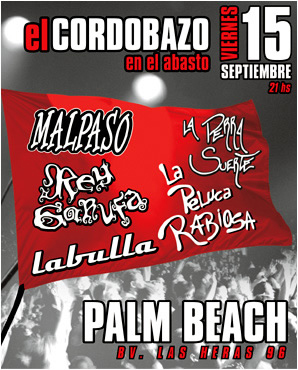

|  |
Cerca de las 22.30 hs del pasado viernes 15 de setiembre, se abrió la primera edición del Cordobazo Rock, un festival atípico o por lo menos inalcanzable hasta ahora para las bandas del circuito local.
Desde temprano la gente hizo la cola en la puerta de Palm Beach, las que se abrieron casi una hora y media antes de que comenzara el show. Entre las filas el rumor crecía un poco más minuto a minuto: ¿Tocaría Callejeros? Es que la banda de Buenos Aires, que cuenta con un público más que fiel en la ciudad de Córdoba, había sido protagonista de los principales titulares informativos del día que generaron las primeras ilusiones.
Los encargados de abrir la noche fueron los chicos de La Peluca Rabiosa con mucha energía sobre el escenario, que fue bien retribuida desde abajo por los seguidores de la banda. Por primera vez pudimos ver algo que se había promocionado mucho: la puesta de luces y sonido era realmente superior a las que pudieron verse en presentaciones anteriores de estos grupos.
Los segundos en orden de aparición fueron los músicos de Labulla que brindaron un entretenido show y con gran participación de su público más fanático. |
|
Como es costumbre en este tipo de festivales, entre banda y banda pudo verse el típico recambio del público cercano al escenario. Mientras algunos se preparan para saltar y cantar al ritmo del grupo de turno, otros prefieren descansar un rato disfrutando de la música y algo de cerveza.
La Perra Suerte fue la banda encargada de cerrar la primera mitad de la noche. Ya con casi toda la gente que se acercó al festival de rock de Córdoba, más de 2000 personas, se armó el pogo. Mucha gente saltó, cantó y bailó los temas y como no podían faltar, muchas chicas sobre los hombros de algún amigo que les hizo el aguante.
A esta altura la atención parecía estar puesta en una sola expectativa colectiva: ¿Toca o no toca Callejeros? Muchos arriesgaban que la presentación estaba confirmada y no se demoraron en mandar mensajes de texto avisando a los amigos. Otros, un poco más pesimistas o realistas, lo negaban rotundamente, pero no sin demostrar su tristeza. Hubo mucha gente en Palm Beach, solo habría que preguntarse cuántos fueron por el rumor que estuvo circulando durante todo el día.
Sin embargo la noche debía continuar y luego de una mini prueba de sonido, una banda que estaba fuera de lista: El Bordo de Buenos Aires salió a escena apoyando a la música cordobesa. El grupo que por estos días se escucha en todas las radios de rock y que prepara una presentación en Obras dentro de poco, hizo sus temas más conocidos, desde abajo no se demoraron los coros. Por unos momentos pareció ser una fecha exclusiva de El Bordo, con toda la gente cerca del escenario y con el, sin duda, pogo más grande de toda la noche. Más de una vez Alejandro Kurz, su cantante, agradeció la invitación a tocar en el festival cordobés y en alguna oportunidad también hizo referencia a Callejeros pidiendo que los dejen tocar. La banda contó con la mejor calidad de sonido de toda la noche, que si bien fue bastante buena durante todos los grupos, pudo apreciarse un antes y un después de El Bordo.
El penúltimo fue Rey Garufa y como ya era costumbre por esas horas, recibió un cálido apoyo de su gente. En concordancia con el tipo de rocanrol que tocan y su nombre de tintes ricoteros, los chicos se animaron a unos covers de Callejeros y Los Redondos respectivamente. Fue lo más cerca que estuvo el tan nombrado rumor de convertirse en realidad. Lo más sorprendente fue como todos se acercaron de golpe al escenario a bailar Callejeros; las mentes estaban ya completamente presas de la ilusión.
A cargo del cierre estuvo Malpaso que también llevó muchos seguidores, quizá el público que con más trapos y cánticos para la banda se acercó hasta el abasto esa noche. En total, buena calidad de colores y sonido, tanto arriba del escenario como abajo.
Pasó la primera edición de un festival que no tiene próximas fechas ya confirmadas, pero que por el apoyo de la gente y el show que todas las bandas dieron en conjunto, no sería raro que se repita. Solo una cuenta pendiente quedó: Callejeros solo pudo estar presente en los cantos de la gente y de los músicos. Esta vez no pudieron estar arriba del escenario donde hace casi un mes atrás se presentaron imprevistamente. ¿Tendremos que esperar mucho más para poder disfrutar de su música? En Córdoba ganas de verlos sobran. |
|